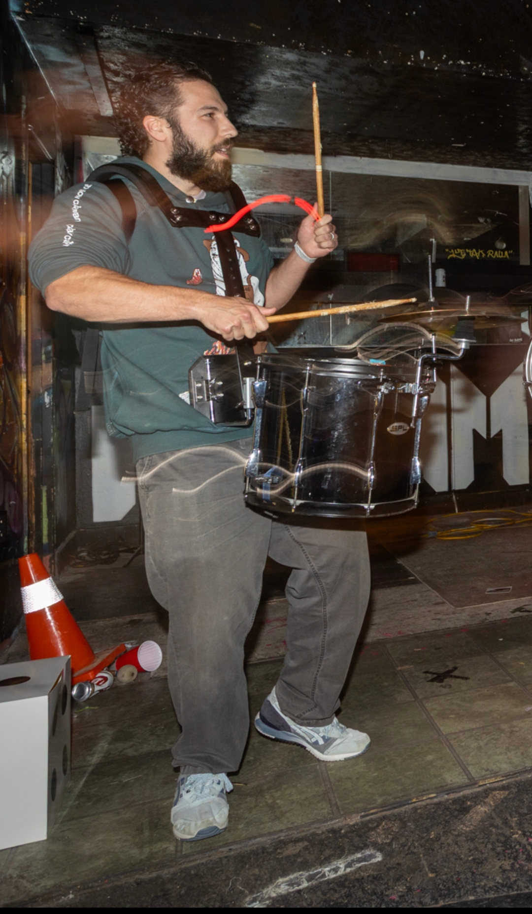

Anyone's Whatever
Writer - Drummer - Vocalist - Producer
Creating music that brings about a positive change in the world has always been a large part of my artistic vision. I've found great fullfillment in joining various community projects, particularly the Unpresident Brass Band. Since joining in 2024, I've quickly become a backbone member, providing drumming, and occassional horn playing. This group offers volunteer New Orleans inspired music for community events, parades, protests, and fundraisers, and aims to keep the revolution dancing!
Sample tracks recorded and produced in my minimal home studio using Ableton.
Writer - Drummer - Vocalist - Producer
Drummer - Producer - Backup Vocalist
Below are two tracks I composed for a 2 person hobby mobile game project.
The utilize a retro 8-bit chipset for a nostalgic feel.
Below is a track for a retro puzzle game concept where each screen contains
a unique ambient loop. This screen is meant to be a pensive still of a well.
The Well

I am a lifelong musician with a drive to innovate, and bring unique, meaningful sounds to every project.
Heavily inspired by video game music, I strive to bring depth and beauty to gaming, and the larger stories and community around it.